Hexo博客的新建
准备工作
环境准备
git、node/npm、hexo
hexo的下载、安装、初始化、启动
- 下载
1 | $ npm install -g hexo-cli |
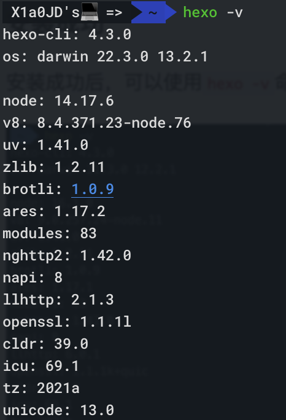
- 初始化
1 | # 进到创建好的文件夹后 |
文件夹中会生成对应的文件，结构如下：
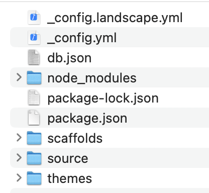
- 启动
1 | $ hexo server |
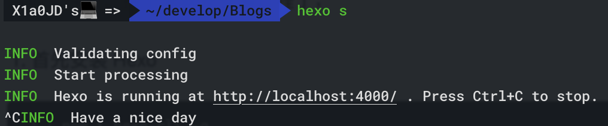
创建博客文章
创建博客
1 | $ hexo new "我的博客" |
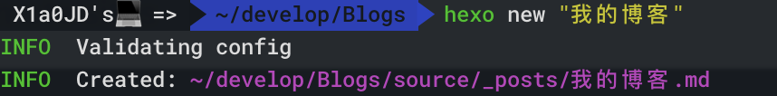
项目结构中会出现刚刚创建的md文件
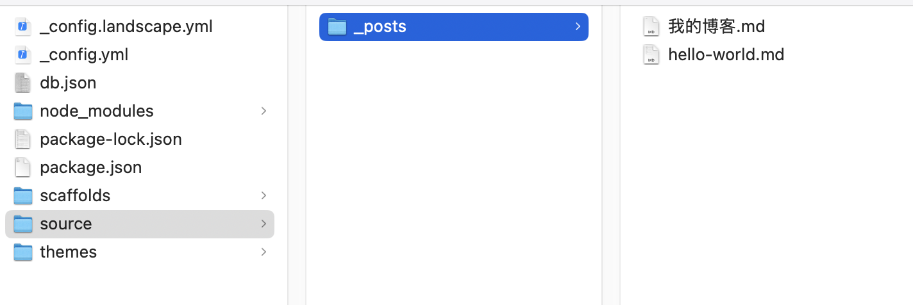
清理项目缓存
新增博客文章或者修改博客文章内容，需要执行此命令:
1 | $ hexo clean |
重新生成博客
1 | $ hexo generate |
然后重新启动项目
修改网站主题
下载主题
Hexo框架默认的是landscape主题，Hexo上有三百多种主题，大家可以上Hexo官网选择自己喜欢的主题，我将随便选取一个主题举例：
1 | $ git clone https://github.com/Shen-Yu/hexo-theme-ayer.git themes/ayer |
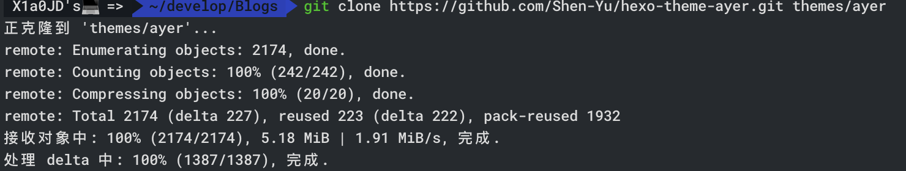
之后themes文件的目录结构如下
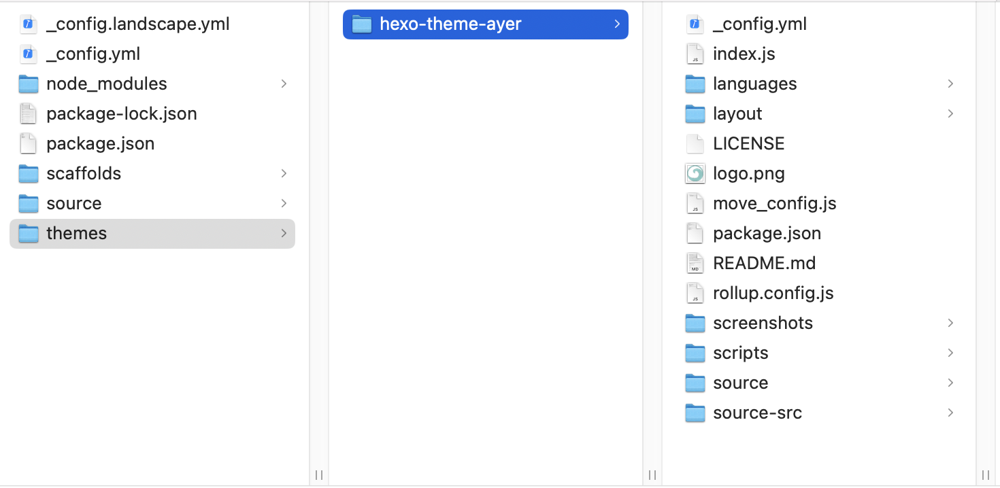
注意：主题文件要放在themes的次级目录下，注意不要themes/themes/ayer
修改项目配置文件
找到项目路径下的_config.yml
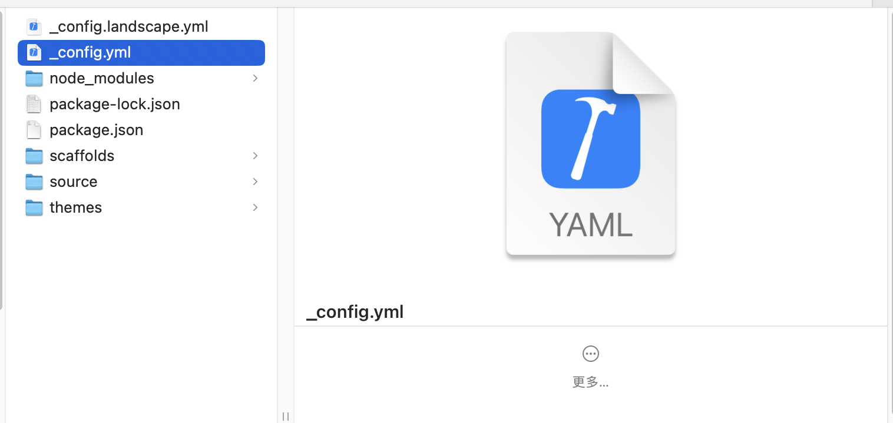
打开文件后，搜索theme 替换成我们刚刚下载的ayer(一般主题打开后，能看到主题的使用介绍，其中包括本主题的名称，我们这个主题的名称叫ayer)名称后保存。
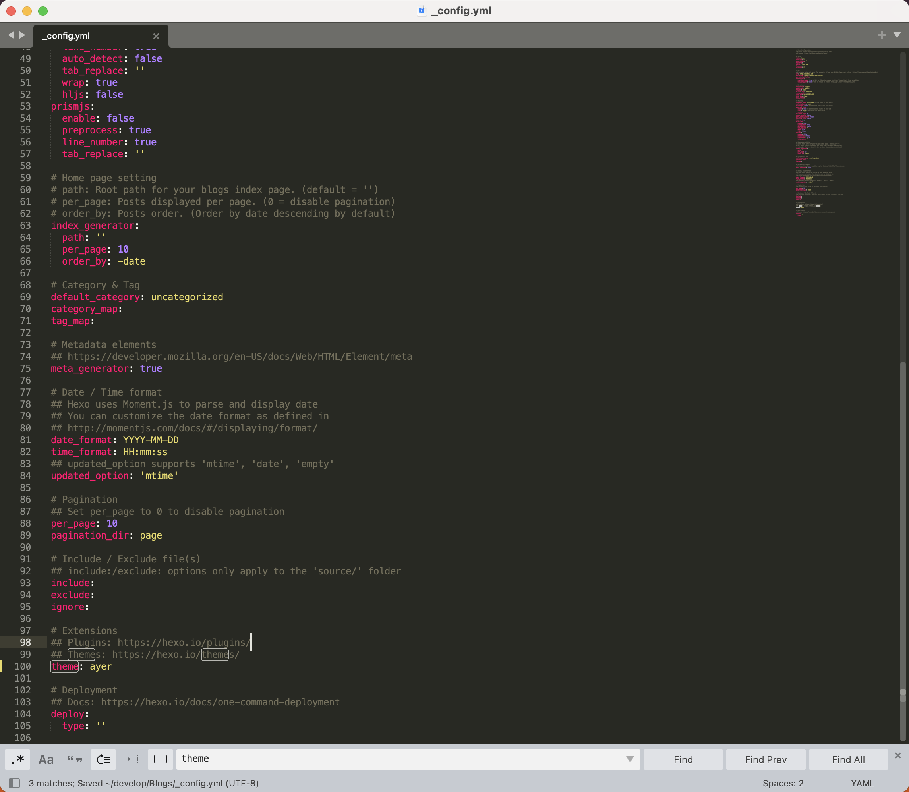
然后分别执行 hexo clean hexo generate hexo server 三个命令
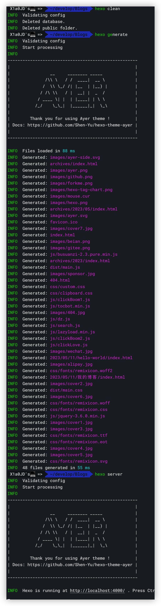
打开http://localhost:4000/ 即可看到主题了
注意：你有可能会出现这种情况，建议清空当前网站的缓存后再打开
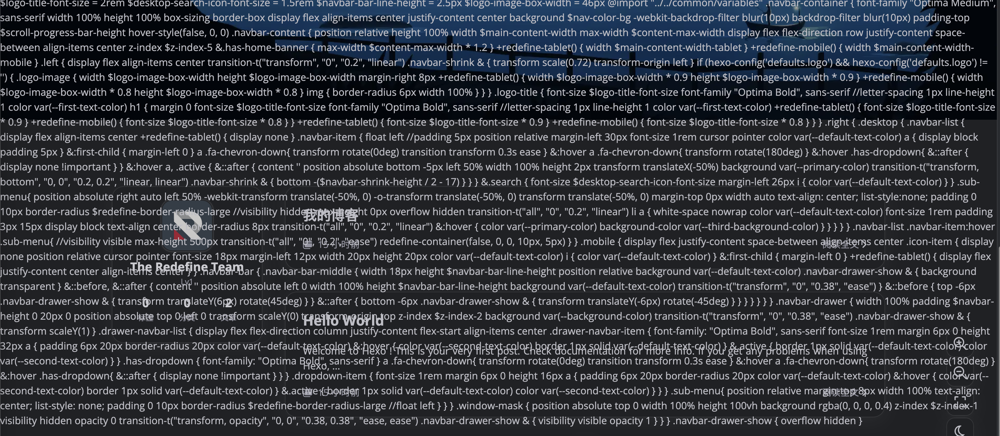
可以F12打开控制台后清空对应网站的cookie
本博客所有文章除特别声明外，均采用 CC BY-NC-SA 4.0 许可协议。转载请注明来自 木东！
相关推荐